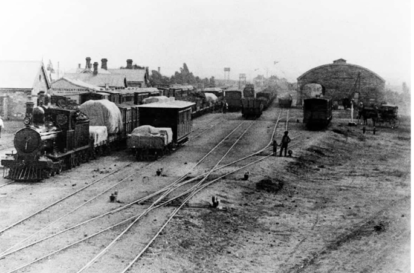

Before Peterborough had a police station, the local officer lived at the Petersburg Hotel and prisoners were chained up in the stable with the horses.
This history walk follows the long fight for a proper station, from the first building in Glogau Street to the courthouse and police station in Jervois Street.
Read about complaints, lobbying, overcrowded cells and busy courts,
and see how the building changed in 1926 and again in the late 1990s. Photographs from 1900 to 2026 show the change.
In the mid 1920s Peterborough had a serious and growing housing shortage, so the railways
built more than a hundred poured cement cottages at Hill View.
This history walk explains why they were built, which railway families lived in them
and how they were designed, with floor plans and historic photographs.
Learn how a Baptist and a Methodist church, a shop, tennis courts and a
playground grew around the new estate, and find familiar local family names in the
1930 electoral roll listing.

In 1886 Petersburg became a corporate town, breaking away from the Yongala District Council
after years of rivalry over rates, roads and railways. This history walk follows the story
from the first council meetings in 1882 through to 1888. Along the way you will meet William
Threadgold, the first mayor, and read how townsfolk dealt with muddy streets, unhealthy conditions,
bitter railway disputes and a brand new local newspaper. See the original clippings and Gazette notices that shaped the town we know today.

In the early 1920s keen golfers, including saddler William Rogers,
turned an unofficial nine-hole course into the Peterborough Golf Club.
This history walk follows the club from its first official match in 1922
right through to 1929, including the opening of the new 18-hole course in July 1927.
Read about record crowds, championship days, a clubhouse carted to the links
in one piece and the ladies who kept everyone fed. The original newspaper clippings
and photos bring the story to life for visitors..

Donec eget ex magna. Interdum et malesuada fames ac ante ipsum primis in faucibus. Pellentesque venenatis dolor imperdiet dolor mattis sagittis magna etiam.
Donec eget ex magna. Interdum et malesuada fames ac ante ipsum primis in faucibus. Pellentesque venenatis dolor imperdiet dolor mattis sagittis magna etiam.